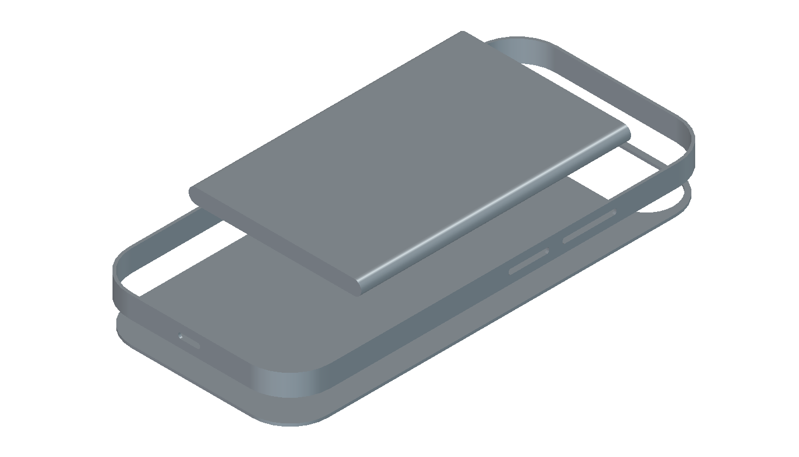
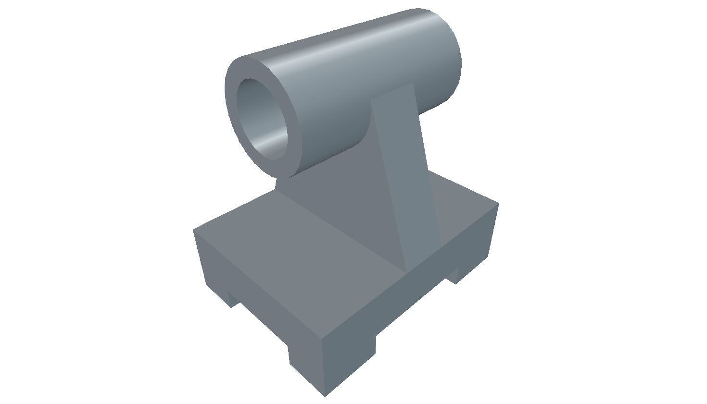
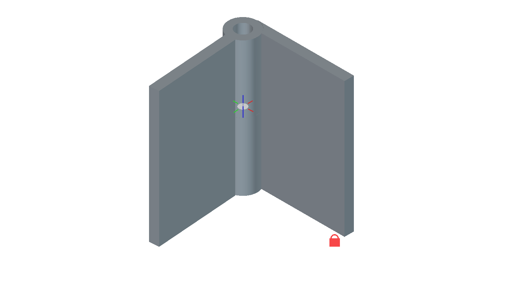
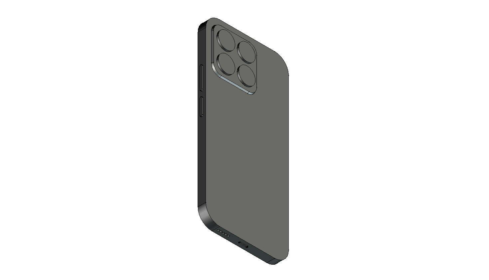
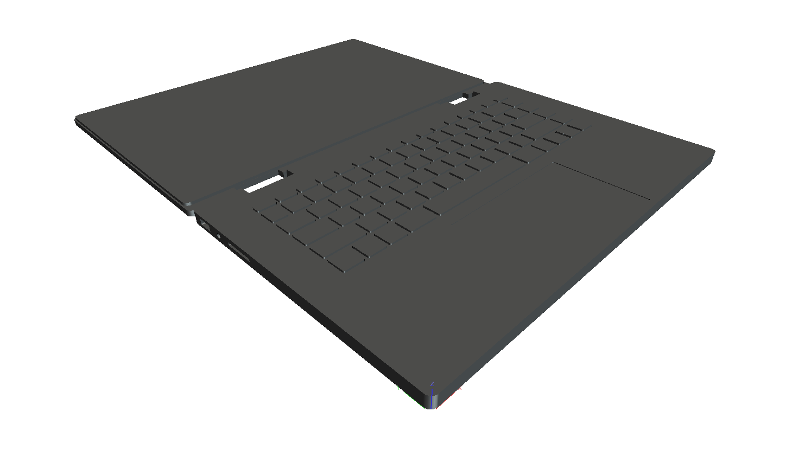
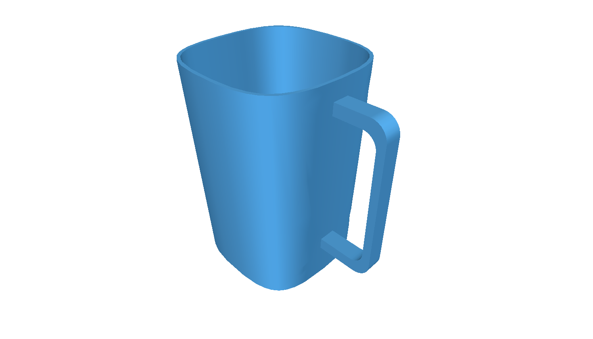
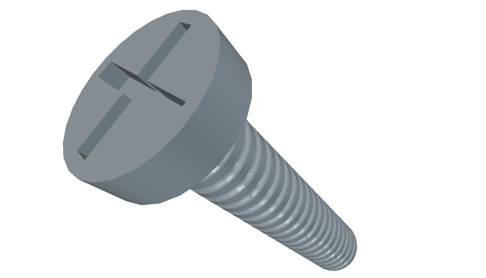
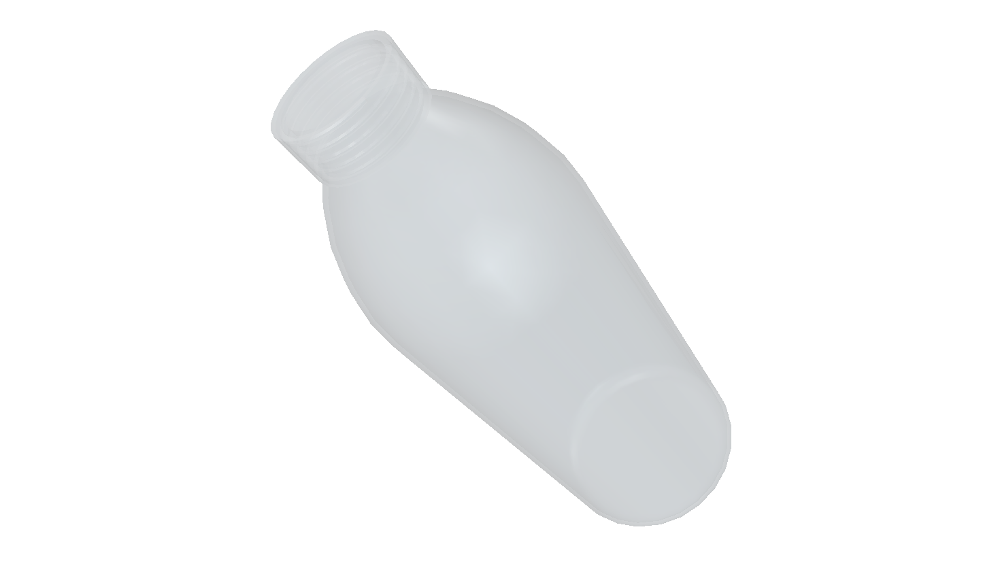

This is a very fun way to consolidate memory. With completely unalienated memory issues, a clear documentation-style website serves its purpose of being a concrete, structured way to store the prospective end-point of all my projects, however vague or shallow. Although, this poses an issue whereby I have to remember this site, but because this site captures end-point rather than process, it's foolproof! Process and progress can be found in my github repository

This is meant to be an exploded model of a theoretical phone focusing on the absolutely most optimal and efficient choices for a modern person, without the unnecesary features required to seperate a flagship from lower-tier phones







This is a recent development so I have not generated enough log files to be shown here